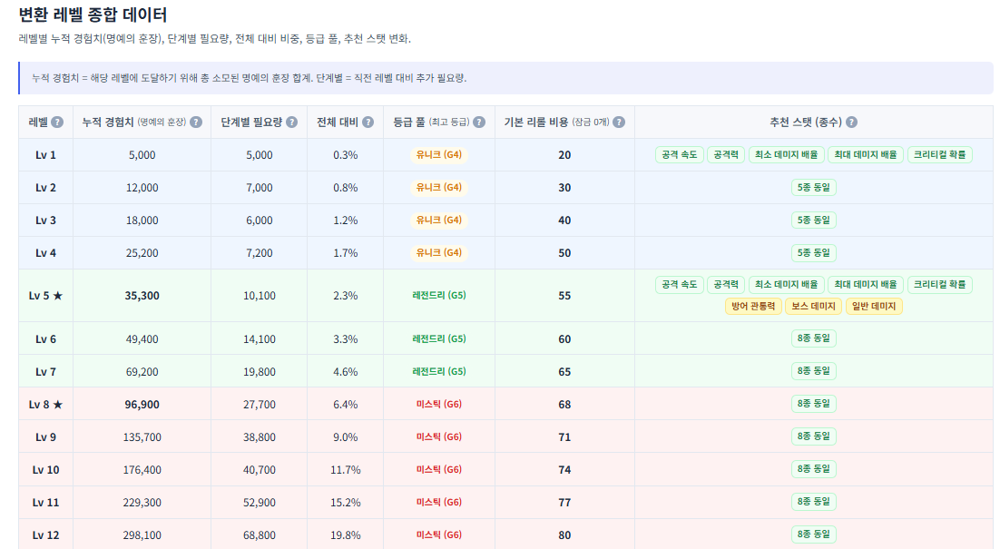
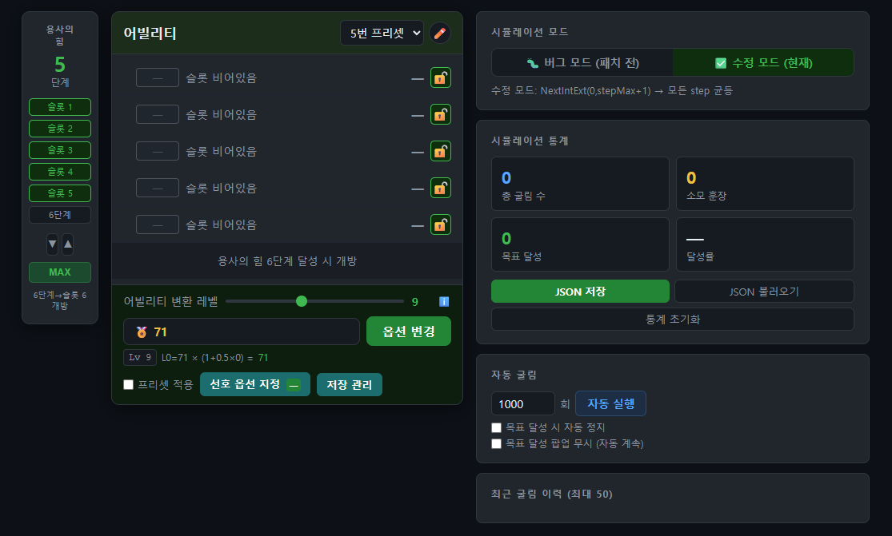
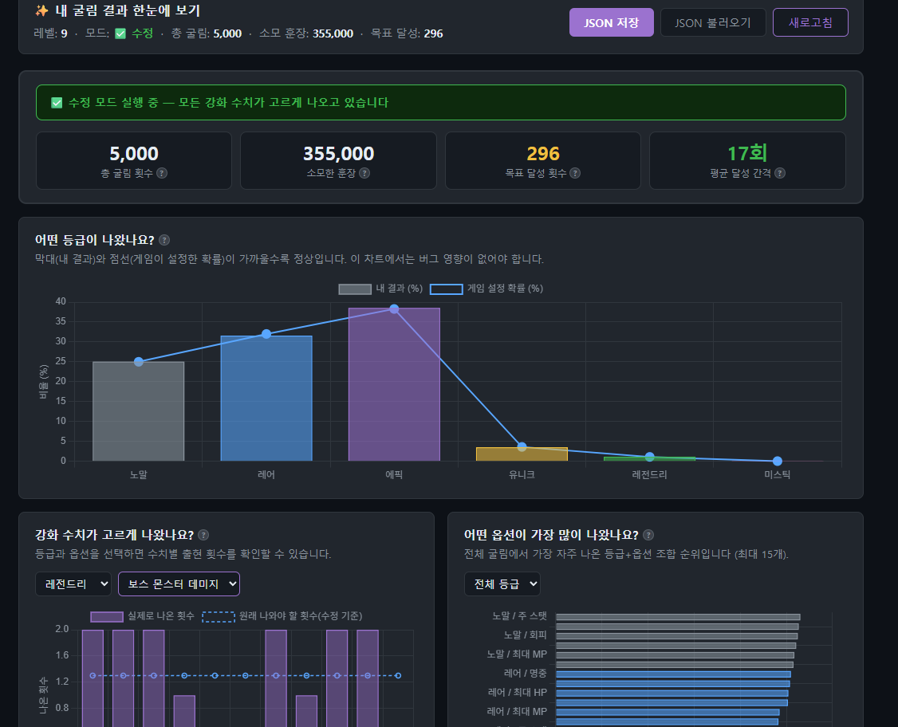
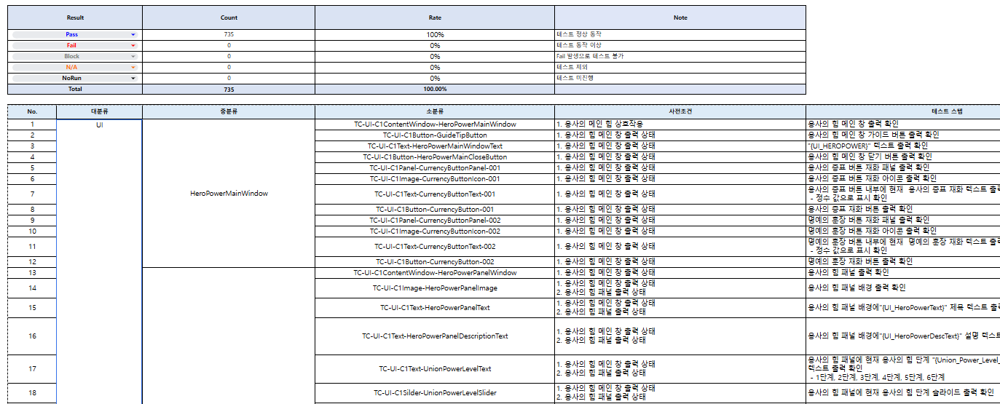
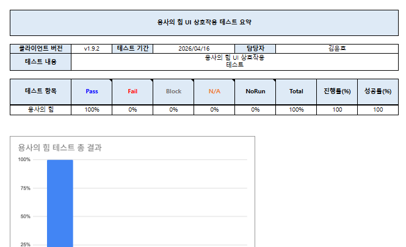
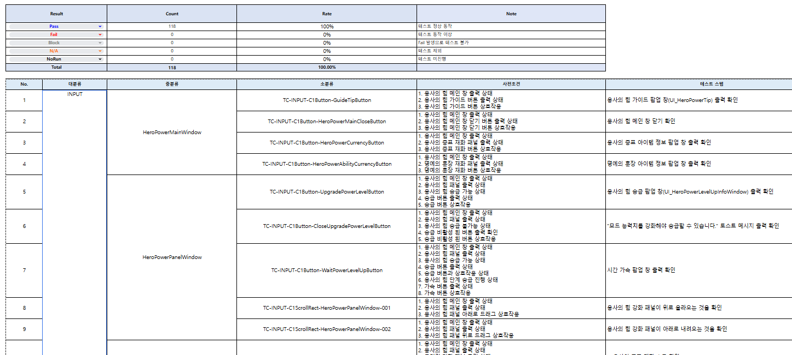

본 분석서는 직접 플레이를 통한 1차 데이터 수집을 기반으로, 유저 커뮤니티 및 유튜브 공략 콘텐츠와의 교차 검증을 거쳐 작성되었습니다. 단순 정보 취합이 아닌 플레이어 시점의 실체험에서 도출한 분석입니다.
기획 의도 및 시스템의 역할
유저는 왜 어빌리티에 몰입하는가?
방치형 RPG에서 유저의 성장은 레벨업, 장비 강화, 유물 누적, 동료 운용 등 다양한 시스템을 통해 이루어집니다. 그런데 흥미롭게도, 메이플 키우기 유저들은 다른 어떤 시스템보다도 어빌리티에 가장 깊이 몰입합니다. 커뮤니티의 공략, 후기, 메타 분석의 절반 이상이 어빌리티 관련 내용이며, 종결 옵션 한 줄을 위해 수십만 단위의 명예의 훈장을 투자하는 유저도 적지 않습니다.
이 현상은 자연스럽게 한 가지 질문으로 이어집니다.
본 장은 이 질문에서 출발합니다. 그리고 그 답을 추적하다 보면, 어빌리티가 단순한 "또 하나의 성장 수단"이 아니라 본 게임의 후반부 깊이를 떠받치는 기반 시스템임이 드러납니다. 유저의 몰입은 우연이 아니라, 이 시스템이 다른 어떤 시스템도 대체할 수 없는 고유 가치를 제공하기 때문에 발생하는 결과입니다.
본 장에서는 유저 몰입의 근거를 5가지 차원에서 분석하며, 마지막에 어빌리티 시스템의 존재 이유를 종합적으로 정의합니다.
1-1. 몰입의 근거 ① — "수치 누적"이 아닌 "빌드 선택"의 매력
유저가 어빌리티에 몰입하는 첫 번째 이유는, 이 시스템이 다른 성장 시스템과 근본적으로 다른 종류의 재미를 제공하기 때문입니다. 메이플 키우기의 주요 성장 시스템을 비교하면 그 차이가 명확히 드러납니다.
| 성장 시스템 | 성장 방식 | 결과 형태 | 유저별 차별화 |
|---|---|---|---|
| 레벨업 | 시간 투자 → 자동 누적 | 수치 (선형) | 없음 |
| 장비 강화 (스타포스) | 재화 투자 → 단계 상승 | 수치 (선형) | 낮음 |
| 무기 (소환/각성/강화) | 가챠 + 등급 승급 + 레벨 강화 | 등급/수치 누적 | 낮음 |
| 유물 | 컬렉션 누적 | 효과 누적 | 낮음 |
| 동료 (소환/레벨업/조합) | 가챠 + 메인/서브 슬롯 조합 | 콘텐츠별 조합 차별화 | 중간 |
| 어빌리티 | 옵션 리롤 + 슬롯 선택 | 빌드 차별화 | 높음 |
무기 시스템과 어빌리티의 결정적 차이
특히 무기 시스템은 확률 기반 가챠라는 점에서 어빌리티와 표면적으로 유사해 보일 수 있습니다. 그러나 그 결과 형태와 유저 행동을 면밀히 비교하면, 본질적으로 다른 시스템임이 드러납니다.
무기 시스템의 특성
- 재화 접근성이 높음 — 무기 소환권은 챕터 사냥, 무기 던전, 일일/주간 퀘스트, 이벤트 등 다양한 경로로 정기적 수급 가능. 무/소과금 유저도 꾸준한 플레이로 상위 등급(미스틱) 도달이 가능합니다.
- 결과의 동질화 — 모든 유저의 목표는 동일합니다. "현 시점 최고 등급 무기를 뽑고, 5성 각성 후, 레벨 200까지 강화한다". 같은 직업을 플레이하는 유저들은 결국 같은 무기를 같은 방향으로 키워나갑니다.
- 선택의 여지가 없음 — 무기를 획득한 후 유저가 결정할 것은 "이걸 더 강화할까, 다음 무기를 노릴까" 뿐입니다. 무엇을 선택했는가가 아니라, 어디까지 도달했는가가 차별화의 전부입니다.
동료 시스템의 특성
- 동료 역시 가챠 기반이지만, 메인 1 + 서브 6슬롯의 조합 운용을 통해 콘텐츠별 동료 교체(사냥/보스/아레나)가 가능하다는 점에서 단순 수치 누적형보다는 한 단계 차별화된 시스템입니다. 다만 차별화의 출발점은 결국 "어떤 동료를 뽑았는가"라는 가챠 결과에 종속되며, 유저의 선택은 보유한 동료 풀 내에서의 조합 선택에 국한됩니다.
어빌리티의 차이점
- 재화 접근성은 낮지만 의사결정 깊이가 큼 — 명예의 훈장은 무기 소환권만큼 흔하지 않지만, 유저는 매 리롤마다 잠그느냐 / 다시 돌리느냐 / 어떤 옵션을 종결로 정할 것인가라는 능동적 의사결정을 내립니다.
- 결과의 차별화 — 같은 직업 유저라도 어빌리티 세팅은 콘텐츠 우선순위에 따라 다릅니다. 사냥 중심 유저, 보스 극딜 유저, 아레나 유저의 어빌리티 빌드는 서로 다른 방향으로 발산합니다.
- 선택이 결과를 결정함 — 유저는 같은 재화를 투입해도 어떤 옵션을 잠그느냐, 어느 시점에 변환 레벨업을 우선하느냐에 따라 완전히 다른 빌드에 도달합니다. 동료 시스템이 "주어진 카드 중에서 고르는 선택"이라면, 어빌리티는 "카드 자체를 만들어가는 선택"입니다.
본질적 차이의 정리
| 차원 | 무기 시스템 | 어빌리티 시스템 |
|---|---|---|
| 가챠 형태 | 가챠 → 등급 승급 → 레벨 강화 (확정 누적) | 가챠 → 옵션 선택 → 잠금 (확률 리롤) |
| 유저의 의사결정 지점 | 강화 여부 / 다음 무기 도전 여부 | 잠금 운용 / 종결 옵션 선정 / 프리셋 분배 |
| 동일 직업 내 결과물 | 동일 (최고 등급 5성 + Lv200으로 수렴) | 차별화 (콘텐츠 우선순위에 따라 발산) |
| 유저별 빌드 차별화 | 낮음 | 높음 |
다른 시스템들이 "누가 더 많이 누적했는가"라는 양적 경쟁을 만든다면, 어빌리티는 "각자 무엇을 선택했는가"라는 질적 차별화를 만듭니다. 무기 시스템처럼 가챠 형태를 가진 시스템조차도 결국 수치 누적으로 수렴되는 반면, 어빌리티만이 빌드 다양화라는 고유 가치를 유저에게 제공합니다.
같은 챕터를 진행하는 두 유저가 있어도 어빌리티 세팅은 서로 다를 수 있고, 이는 "나의 빌드는 나만의 것"이라는 소유감으로 이어집니다. 유저가 어빌리티에 깊이 몰입하는 이유는, 그것이 자신의 캐릭터를 진정으로 "내 캐릭터"로 만들어주는 유일한 시스템이기 때문입니다.
1-2. 몰입의 근거 ② — 시스템 의존도, 어빌리티가 없으면 무엇이 무너지는가?
유저의 몰입이 정당화되는 두 번째 이유는, 어빌리티가 다른 시스템들의 기반 역할을 하기 때문입니다. 어빌리티 시스템이 사라진다고 가정하면, 단순히 "성장 옵션 하나가 줄어드는" 차원이 아니라 다음 시스템들이 연쇄적으로 무력화됩니다:
- 프리셋 시스템 무력화 — 사냥/보스/아레나 등 콘텐츠별 세팅 분리는 어빌리티 옵션을 기반으로 작동합니다. 어빌리티가 없으면 프리셋의 존재 이유 자체가 사라집니다.
- 변환 레벨 시스템 소멸 — 5장에서 분석할 변환 레벨은 어빌리티 리롤 행위에 종속됩니다. 어빌리티가 없으면 변환 레벨도 작동하지 않습니다.
- 콘텐츠별 전략 차별화 불가능 — "보스 데미지 +40%" 같은 콘텐츠 특화 빌드는 어빌리티에서만 가능합니다. 다른 시스템은 전 콘텐츠 공통 누적 방식입니다.
- 질적 목표 설정 상실 — 다른 시스템의 목표는 "더 많이"인 반면, 어빌리티는 "무엇을 종결로 정할 것인가"라는 질적 선택 목표를 제공합니다.
유저가 어빌리티에 시간과 재화를 투자하는 것은 단순히 그 시스템 하나를 위해서가 아닙니다. 어빌리티에 투자하는 행위 자체가 프리셋, 변환 레벨, 콘텐츠 빌드 다변화 전체를 작동시키는 진입점이기 때문입니다.
1-3. 몰입의 근거 ③ — 미투자 시 체감되는 실전 격차
위의 두 가지가 시스템 차원의 분석이라면, 이번 절은 유저의 일상 플레이에서 어떻게 체감되는가에 대한 분석입니다. 어빌리티 투자를 하지 않을 경우 유저는 직접적인 진행 불가보다는 기회비용 측면의 차이를 체감하게 됩니다.
① 챕터 진행 속도 및 파밍 효율 차이 — 어빌리티가 없어도 챕터 클리어는 가능하지만, 사냥 전용 옵션이 세팅된 유저 대비 동일 구간 통과에 더 많은 시간이 소요됩니다. 이 파밍 효율의 차이는 시간당 획득 재화의 격차로 이어져 전체적인 성장 속도에 영향을 줍니다.
② 하이엔드 콘텐츠 보상 경쟁력 — 보스 데미지나 방어 관통력 등 핵심 타격 옵션은 다른 성장 시스템에서 동일한 수치로 보완하기 어렵습니다(1-1 표 참조). 제한된 시간 내 폭딜이 요구되는 파티 퀘스트나 아레나에서 누적 데미지 달성이 어려워지며, 이는 상위 등급 보상 획득 경쟁력에 직접 영향을 미칩니다.
③ 길드 단합 콘텐츠 기여도 — 길드 토벌전 등 협력 콘텐츠에서 개인 스펙은 길드 전체 랭킹과 보상에 영향을 줍니다. 이는 '길드 기여'에 대한 자연스러운 동기로 작용하여 자발적인 스펙업을 유도합니다.
이 세 가지 체감 효과는 모두 "빌드 차별화의 부재"에서 비롯됩니다. 1-1에서 분석한 빌드 차별화의 가치가 실전 콘텐츠에서 가시화되는 지점이 바로 이 영역이며, 유저가 어빌리티 투자를 미룰 수 없게 만드는 직접적 압력으로 작용합니다.
1-4. 몰입의 근거 ④ — 방치형 RPG의 본질적 약점을 보완
유저 몰입의 네 번째 근거는 장르 차원에 있습니다. 방치형 RPG는 "시간만 투자하면 누구나 같은 곳에 도달"하는 구조적 특성을 가지며, 이는 후반부 "내가 특별하지 않다"는 동질화 감각으로 이어져 유저 이탈의 주요 원인이 됩니다.
어빌리티와 같은 옵션 리롤 시스템은 "내 캐릭터는 다른 유저와 다르다"는 차별화 감각을 제공함으로써 이 약점을 보완합니다. 이는 본 게임만의 특징이 아니라 방치형 RPG 장르 전반의 표준 메커니즘(세븐나이츠 키우기의 룬, 디아블로류의 옵션 리롤 등)이며, 어빌리티가 본 게임에서 차지하는 위치가 장르적으로 "보조 시스템"이 아닌 "핵심 차별화 시스템"임을 확인할 수 있습니다.
즉 유저의 어빌리티 몰입은 본 게임 고유의 현상이 아니라, 방치형 RPG 장르 전반에서 검증된 보편적 행동 패턴입니다.
1-5. 몰입의 근거 ⑤ — 결제로 이어지는 동선 (BM 구조)
마지막 다섯 번째 차원은 BM 측면입니다. 다른 성장 시스템 대부분은 확정 누적형(재화 투자 → 수치 상승 보장)인 반면, 어빌리티는 확률 리롤형(재화 투자 → 결과 미보장)입니다. 이 차이는 유저 몰입의 깊이와 BM 구조 모두에 결정적입니다:
| 구분 | 확정 누적형 (장비/유물 등) | 확률 리롤형 (어빌리티) |
|---|---|---|
| 재화 소모 상한 | 존재 (목표 단계 도달 시 종료) | 없음 (욕망 강도에 비례하여 무한 확장) |
| 주요 유저층 | 일반 유저 (안착 + 평균 매출) | 고관여 유저 (종결 + 최대 매출) |
| 게임 내 역할 | 폭넓은 유저 리텐션 | 고관여 유저 BM 엔진 |
결국 유저는 1-3에서 분석한 성장 정체를 단축하고 경쟁 우위를 확보하기 위해 결제를 진행하게 됩니다. 유료 패스나 다이아를 통해 명예의 훈장에 투자함으로써 즉각적인 체급 상승과 파밍 효율 향상을 얻는 구조이며, 이는 본 게임의 안정적인 매출-리텐션 연계 구조를 형성합니다.
특히 확률 리롤형 구조의 특성상 어빌리티는 "넓고 얕은 매출"이 아닌 "깊고 긴 매출"을 담당하는 핵심 BM 엔진으로 작동합니다. 유저의 몰입이 깊을수록 결제 동선도 길어지는 구조이며, 이는 1-1~1-4에서 분석한 어빌리티의 고유 가치들이 모두 결합되어 작동한 결과입니다.
1-6. 종합 — 유저 몰입의 진짜 이유, 그리고 어빌리티의 존재 이유
본 장의 출발점이었던 질문 — "유저는 왜 어빌리티에 몰입하는가?"에 대한 답은 5가지 차원의 분석을 통해 다음과 같이 정리됩니다:
유저가 어빌리티에 깊이 몰입하는 것은 이 시스템이
을 동시에 제공하기 때문이다.
그리고 이 5가지 가치는 단순한 "장점 나열"이 아니라, 어빌리티 시스템이 본 게임에서 차지하는 위치 자체를 보여줍니다.
어빌리티는 "있으면 좋은 추가 시스템"이 아니다. 이 시스템이 존재함으로써 비로소 본 게임의 후반부 깊이가 완성된다. 유저의 몰입은 우연이 아니라, 어빌리티가 본 게임의 기반 시스템이라는 사실의 자연스러운 결과다.
이 시스템적 위치를 전제로, 2장 이후에서는 어빌리티의 내부 메커니즘(잠금, 변환 레벨, 프리셋)을 단계적으로 분석합니다.
시스템 구조 요약 Flow Analysis
본 콘텐츠는 유저의 성장 동기를 바탕으로 순환적 사이클 구조를 가지며, 단순한 단계 진행이 아닌 반복 가동되는 성장 엔진으로 작동합니다.
2-1. 기본 단위 구조
- 용사의 힘 — 캐릭터 본연의 체급을 영구적으로 올리는 내실 성장 목표 제공
- 어빌리티 (리롤 ↔ 잠금) — 확률적 획득과 잠금 메커니즘을 통해 한 줄씩 단계적으로 완성
- 프리셋 — 완성된 어빌리티 세트를 콘텐츠별로 보관/운용하는 컨테이너
- 변환 레벨 — 사이클 전체에 걸쳐 누적되는 메타 보상 축 (재화 투자 총량 → 1~20Lv)
2-2. 사이클 구조
잠금 — 한 슬롯을 "완성"으로 이끄는 동력 메커니즘 (4장)
프리셋 — 완성된 단위를 콘텐츠별로 "확장"시키는 그릇 (4-4장)
변환 레벨 — 사이클 전체를 관통하며 장기 보상을 누적하는 메타 축 (5장)
어빌리티 옵션 확률 구조 분석 Data Insight
분석 결과, 어빌리티 옵션은 획득 가능 레벨과 등급에 따라 4단계로 계층 분리됩니다. 특히 고정 주 스탯은 등급에 완전히 종속되어, 레전드리(800~1,200)/미스틱(1,500~2,500)의 높은 고정 수치는 초반 구간에서 절대 획득 불가합니다.
| 티어 | 대표 등급 | 획득 최소 레벨 | 주요 옵션 및 수치 | 기획 인사이트 |
|---|---|---|---|---|
| S (미스틱 종결) |
미스틱 | Lv 8~ |
보스 몬스터 데미지 28~40% 방어 관통력 14~20% 최대/최소 데미지 배율 28~40% 공격 속도 15~20% 고정 주 스탯 1,500~2,500 (Lv 8+ 전용) |
Lv 8 미스틱 해금 후에만 등장. 랭커/과금 유저의 최종 종결 목표. 고정 주 스탯 1,500~2,500도 초반 획득 불가 — Lv 8 분기점의 핵심 가치 |
| A (레전드리 목표) |
레전드리 | Lv 5~ |
보스/일반 몬스터 데미지 18~25% 방어 관통력 8~12% 공격 속도 10~14% 메소/경험치 획득량 5~8% 고정 주 스탯 800~1,200 (Lv 5+ 전용) |
Lv 5 레전드리 해금 후 등장. 무/소과금 유저의 현실적 달성 목표. 고정 주 스탯 800~1,200도 Lv 5+ 이후에만 획득 가능 |
| B (% 효율) |
에픽 ~ 유니크 | Lv 1~ |
크리티컬 확률 3~9% / 크리티컬 저항 4.5~13.5% 최대/최소 데미지 배율 7~15% 데미지 3~15% 받는 피해 감소 2~3% / 공격 속도 7~9% |
Lv 1부터 에픽/유니크에서 획득 가능. 레전드리/미스틱 확보 전 보유 가치가 있으며, 상위 등급 확보 이후 교체 대상이 되는 과도기 옵션 |
| C (초반 실용) |
노말 ~ 유니크 | Lv 1~ |
고정 주 스탯 40~700 명중 / 회피 2~12 최대 HP 1,200~30,000 / 최대 MP 30~400 MP 회복 3~30 / 디버프 내성 4~12 |
Lv 1부터 가장 높은 확률로 획득 가능한 초반 실용 옵션. 스탯 기반이 낮은 초반 전투력의 핵심. 후반 성장 누적 시 상대 효율 하락 → 자연스러운 재투자 유도 |
고정 주 스탯은 등급에 따라 40 ~ 2,500까지 분포하며, 높은 수치일수록 높은 등급에만 배치됩니다. 레전드리(800~1,200)는 Lv 5+, 미스틱(1,500~2,500)은 Lv 8+ 이후에만 획득 가능하므로, 초반 구간에서는 유니크 주 스탯 700이 사실상 상한선입니다.
이 설계는 초반부터 과도한 고정 수치를 제공하지 않으면서, 레벨업을 통한 등급 해금으로 획득 가능한 수치 상한이 단계적으로 열리는 구조입니다. 유니크(700) → 레전드리(1,200, Lv 5+) → 미스틱(2,500, Lv 8+)으로 이어지는 고정 스탯 상향이 레벨 투자의 직접적 보상으로 기능하며, 장기적 성장 목표를 자연스럽게 형성합니다.
잠금(Lock) 시스템과 재화 운영 구조
어빌리티 시스템의 깊이는 두 가지 핵심 메커니즘 — 잠금(Lock) 시스템(4장) 과 변환 레벨 시스템(5장) — 의 결합으로 형성됩니다. 본 장에서는 잠금 시스템을 다루며, 변환 레벨과의 연계는 5장에서 논의합니다.
4-1. 비용 누적 메커니즘 (산식 검증 완료)
유저가 원하는 고가치 옵션(예: 보스 데미지 40%)을 획득한 후 해당 슬롯을 '잠금' 처리하면, 그 슬롯은 이후 리롤에서 변경되지 않고 유지됩니다. 다만 잠금 슬롯 수가 늘어날수록 나머지 슬롯의 1회 리롤 비용(명예의 훈장)이 단계적으로 가산되는 구조입니다.
데이터 검증 결과, 비용 구조는 다음 규칙을 따릅니다: 잠금 슬롯이 1개 늘어날 때마다, 해당 레벨의 기본 비용(잠금 0개)의 절반씩 일정하게 가산됩니다. 잠금 6개 시 기본 비용의 정확히 4배에 도달하며, 이 비율 구조는 Lv1~Lv20 전 구간에서 동일하게 유지됩니다.
잠금 0개 = 기준(1.0배) → 잠금 1개 = 1.5배 → 잠금 2개 = 2.0배 → 잠금 3개 = 2.5배 → 잠금 6개 = 4.0배
지수적 폭증이 아닌 선형 가산 구조 — 유저가 비용을 사전에 정확히 예측 가능
아래 표는 변환 레벨 1~20의 실제 1회 리롤 비용(명예의 훈장)입니다:
| 변환 Lv | 잠금 0개 | 잠금 1개 | 잠금 2개 | 잠금 3개 | 잠금 4개 | 잠금 5개 | 잠금 6개 |
|---|---|---|---|---|---|---|---|
| Lv 1 | 20 | 30 | 40 | 50 | 60 | 70 | 80 |
| Lv 2 | 30 | 45 | 60 | 75 | 90 | 105 | 120 |
| Lv 3 | 40 | 60 | 80 | 100 | 120 | 140 | 160 |
| Lv 4 | 50 | 75 | 100 | 125 | 150 | 175 | 200 |
| Lv 5 | 55 | 83 | 110 | 138 | 165 | 193 | 220 |
| Lv 6 | 60 | 90 | 120 | 150 | 180 | 210 | 240 |
| Lv 7 | 65 | 98 | 130 | 163 | 195 | 228 | 260 |
| Lv 8 | 68 | 102 | 136 | 170 | 204 | 238 | 272 |
| Lv 9 | 71 | 107 | 142 | 178 | 213 | 249 | 284 |
| Lv 10 | 74 | 111 | 148 | 185 | 222 | 259 | 296 |
| Lv 11 | 77 | 116 | 154 | 193 | 231 | 270 | 308 |
| Lv 12 | 80 | 120 | 160 | 200 | 240 | 280 | 320 |
| Lv 13 | 83 | 125 | 166 | 208 | 249 | 291 | 332 |
| Lv 14 | 86 | 129 | 172 | 215 | 258 | 301 | 344 |
| Lv 15 | 89 | 134 | 178 | 223 | 267 | 312 | 356 |
| Lv 16 | 91 | 137 | 182 | 228 | 273 | 319 | 364 |
| Lv 17 | 93 | 140 | 186 | 233 | 279 | 326 | 372 |
| Lv 18 | 95 | 143 | 190 | 238 | 285 | 333 | 380 |
| Lv 19 | 97 | 146 | 194 | 243 | 291 | 340 | 388 |
| Lv 20 | 99 | 149 | 198 | 248 | 297 | 347 | 396 |
행 색상: 입문 구간 (Lv 1~4) 전환 구간 (Lv 5~7) 마라톤 구간 (Lv 8~20)
4-2. 유저 심리 모델 (매몰 비용 효과)
이 구조는 유저의 의사결정에 매몰 비용 효과이미 투자한 비용(시간/재화)이 아깝기 때문에, 회수 가능성이 낮더라도 투자를 계속 이어가게 되는 심리적 편향.
잠금 슬롯이 늘수록 리롤 비용이 증가하여 "여기서 멈출 수 없다"는 심리를 자연스럽게 유발합니다.를 자연스럽게 형성합니다.
1개 획득
잠금
1.5배로 증가
획득
누적
추가 가산
위한 집중 투자
이미 확보한 상위 옵션 3~4개의 가치가 누적될수록, 유저는 마지막 슬롯에서 최상위 옵션(0.0009%)을 확보하기까지 리롤을 지속할 동기가 강해집니다. 이 과정에서 자연스럽게 명예의 훈장 수요가 증가하며, 유료 재화 결제로 이어지는 동선이 형성됩니다.
4-3. 시스템 설계상의 의의
잠금 시스템은 단순 확률 뽑기 대비 다음과 같은 차별점을 제공합니다:
- 단계적 성취감 — 한 줄씩 완성해가는 과정에서 명확한 진척감 제공
- 재화 활용처 확장 — 잠금 누적에 따른 비용 가산을 통해 재화 운영의 깊이 확보
- 장기 목표 유지 — 마지막 1줄을 향한 지속적 동기 부여
- 예측 가능한 비용 곡선 — 선형 가산 구조로 유저가 자신의 재화 투자량을 사전에 계산 가능
4-4. 잠금 시스템과 프리셋의 연계 구조
잠금 시스템은 단일 프리셋 슬롯을 "완성"으로 이끄는 동력 메커니즘이며, 프리셋은 이렇게 완성된 단위를 콘텐츠별로 보관/운용하는 컨테이너로 작동합니다. 즉 [리롤 → 잠금 → 한 슬롯 완성] → [프리셋 다각화] → [새 프리셋 슬롯 시작]의 사이클이 형성되며, 이 순환 구조가 어빌리티 시스템의 장기 리텐션을 견인하는 핵심 동력으로 평가됩니다.
특히 주목할 점은, 프리셋의 다중 슬롯 구조 자체가 잠금 메커니즘의 적용 범위를 확장시키는 증폭 장치로 기능한다는 점입니다. 만약 프리셋이 1개뿐이라면 한 번 완성된 후 리롤/잠금 사이클을 다시 가동할 동기가 약해집니다. 그러나 프리셋이 여러 개 존재하기 때문에, 1번(사냥) 완성 후에도 2번(보스), 3번(아레나) 슬롯을 새로 채우는 과정에서 동일한 사이클이 반복적으로 가동됩니다. 즉 프리셋은 단순한 편의 기능이 아니라, 잠금 메커니즘의 효용을 콘텐츠 수만큼 곱셈으로 확장시키는 시스템적 증폭 장치로 평가할 수 있습니다.
이 연계 구조는 7장에서 다룰 유저층별 운영 전략과 직접적으로 연결됩니다.
어빌리티 변환 레벨 시스템
어빌리티 시스템의 또 다른 핵심 축은 어빌리티 변환 레벨입니다. 이는 4장의 잠금 시스템과 함께 어빌리티 콘텐츠를 지탱하는 양대 메커니즘이며, 단기 운(運)의 변동성을 장기 성장 축으로 흡수하는 보상 보정 장치리롤 실패 시 소모된 명예의 훈장이 변환 경험치로 누적되어
레벨업에 기여하는 구조. 단기 운의 편차를 장기 성장 보상으로
전환함으로써 반복 실패의 좌절감을 설계적으로 완화함.로 기능합니다.
5-1. 변환 레벨 메커니즘 (데이터 테이블 검증 완료)
변환 레벨은 1레벨부터 20레벨까지 구성되어 있으며, 유저가 어빌리티 리롤에 소모한 명예의 훈장 누적량을 기반으로 경험치가 적립되는 구조입니다. 즉 단순한 리롤 횟수가 아니라 재화 투자 총량이 레벨 상승을 결정합니다.
데이터 테이블 분석 결과, 변환 레벨은 두 개의 분기점(5Lv, 8Lv)을 중심으로 한 3단계 구조로 설계되어 있습니다.
| 레벨 구간 | 옵션 등급 풀 | 추천 스탯 | 구간 길이 | 구간 성격 |
|---|---|---|---|---|
| 1 ~ 4 Lv | Grade 1~4 활성 노말/레어/에픽/유니크 |
5종 공격 속도 / 공격력 / 최소 데미지 배율 / 최대 데미지 배율 / 크리티컬 확률 |
4레벨 | 입문 구간 |
| 5 ~ 7 Lv | Grade 5 신규 추가 레전드리 해금 → 누적 Grade 1~5 |
8종 ↑ 5종 + 방어 관통력 / 보스 몬스터 데미지 / 일반 몬스터 데미지 추가 |
3레벨 | 전환 구간 |
| 8 ~ 20 Lv | Grade 6 신규 추가 후 풀 고정 미스틱 해금 → 누적 Grade 1~6, 이후 확률만 누적 상승 |
8종 유지 | 13레벨 | 마라톤 구간 |
전체 20레벨 중 약 65%에 해당하는 13레벨 구간(8~20Lv)이 신규 등급 풀 없이 확률만 누적 상승하는 구조라는 점은 본 시스템의 핵심 설계 철학을 드러냅니다.
또한 Lv20 도달까지 누적 요구 경험치는 약 150만 포인트로, Lv1 도달 기준치 대비 약 300배에 해당하는 장기 마라톤 콘텐츠임이 데이터로 확인됩니다.
5-2. 시스템 설계상의 의의
본 시스템은 확률 기반 콘텐츠의 본질적 약점인 '좌절 리스크'를 효과적으로 흡수하는 동시에, '옵션 풀 개방'과 '확률 향상'을 단계별로 분리 설계하고, 레벨업 곡선 자체에도 좌절 흡수 장치를 내장한 점이 특히 정교합니다.
① 좌절 흡수 장치리롤에 실패해도 소모된 명예의 훈장이 변환 경험치로 누적되어
레벨업에 기여하고, 향후 더 높은 확률과 더 넓은 옵션 풀로
보상받는 설계 메커니즘. 단기 실패를 장기 성장으로 전환함.로서의 기능
이 구조는 유저에게 단기 결과(이번 리롤)와 별개로 장기 성장 축(변환 레벨)을 동시에 제공합니다. 결과적으로 4장에서 분석한 잠금 시스템의 매몰 비용 효과가 가질 수 있는 심리적 부담을 완화시키며, 유저가 지속적으로 도전을 이어갈 수 있는 동기 보정 장치로 작동합니다.
② 두 개의 분기점 (5Lv = 종결 옵션 조준점, 8Lv = 확률 펌핑 진입점)
데이터 분석 결과, 변환 레벨은 단일 분기점이 아닌 두 개의 의미 있는 전환점을 가집니다.
- 5Lv = 종결 옵션 조준점: 추천 스탯이 5종에서 8종으로 확장되며, 이때 추가되는 3종(방어 관통력 / 보스 데미지 / 일반몹 데미지)은 6장에서 [0티어]로 분류된 종결 옵션과 직접 연결됩니다. 즉 5Lv는 유저가 "범용 옵션 확보 단계"에서 "하이엔드 종결 옵션을 본격적으로 노리는 단계"로 전환하는 시스템적 분기점입니다.
- 8Lv = 확률 펌핑 진입점: 최고 등급(Grade6) 옵션 풀이 완성되며, 이후 13레벨 동안은 신규 등급 없이 확률만 누적 상승합니다. 즉 8Lv는 "옵션 발견의 단계"에서 "옵션 확보의 단계"로 전환하는 분기점이며, 8~20Lv의 13레벨 구간은 장기 종결을 위한 마라톤 콘텐츠로 기능합니다.
③ 레벨업 곡선의 단계적 완화 (좌절 흡수 장치의 이중 설계)
데이터 분석에서 드러난 가장 흥미로운 설계 특성은 레벨업 경험치 증가율이 후반으로 갈수록 완화된다는 점입니다.
| 레벨업 구간 | 레벨업 필요 훈장 (근사치) | 전 구간 대비직전 레벨업 구간의 필요 훈장 대비 이번 구간의 증감률. (−) = 전 구간보다 경감 | (+) = 전 구간보다 증가 수치 완화가 지속될수록 레벨업 페이스가 가속을 멈춤. |
|---|---|---|
| Lv1 → 2 | 약 7,000 | — |
| Lv2 → 3 | 약 6,000 | -15% |
| Lv3 → 4 | 약 7,000 | +20% |
| Lv4 → 5 | 약 10,000 | +40% |
| Lv5 → 6 | 약 15,000 | +40% |
| Lv6 → 7 | 약 20,000 | +40% |
| Lv7 → 8 | 약 30,000 | +40% |
| Lv8 → 9 | 약 40,000 | +40% |
| Lv9 → 10 | 약 40,000 | +5% |
| Lv10 → 11 | 약 55,000 | +30% |
| Lv11 → 12 | 약 70,000 | +30% |
| Lv12 → 13 | 약 90,000 | +30% |
| Lv13 → 14 | 약 120,000 | +30% |
| Lv14 → 15 | 약 100,000 | -15% |
| Lv15 → 16 | 약 120,000 | +20% |
| Lv16 → 17 | 약 145,000 | +20% |
| Lv17 → 18 | 약 175,000 | +20% |
| Lv18 → 19 | 약 210,000 | +20% |
| Lv19 → 20 | 약 250,000 | +20% |
일반적인 게임 디자인의 직관과 달리, 본 시스템은 후반 구간일수록 레벨업 가속도가 의도적으로 완화되도록 설계되어 있습니다. 이는 8Lv 이후의 13레벨 마라톤 구간에서 유저가 좌절하지 않도록 레벨업 페이스 자체에 좌절 흡수 장치를 내장한 정교한 설계로 해석됩니다.
물론 절대량은 여전히 누적되므로(Lv20 도달 시 약 150만 포인트, Lv1 대비 약 300배), 증가율 완화와 절대량 누적이라는 이중 곡선이 균형을 이루는 구조입니다.
④ 1회 리롤 비용의 증가폭 둔화
1회 리롤 기본 비용(L0)의 레벨별 실제 값과 증가폭입니다:
| 레벨 | L0 비용 (훈장) | 전 레벨 대비 |
|---|---|---|
| Lv 1 | 20 | — |
| Lv 2 | 30 | +10 |
| Lv 3 | 40 | +10 |
| Lv 4 | 50 | +10 |
| Lv 5 | 55 | +5 |
| Lv 6 | 60 | +5 |
| Lv 7 | 65 | +5 |
| Lv 8 | 68 | +3 |
| Lv 9 | 71 | +3 |
| Lv 10 | 74 | +3 |
| Lv 11 | 77 | +3 |
| Lv 12 | 80 | +3 |
| Lv 13 | 83 | +3 |
| Lv 14 | 86 | +3 |
| Lv 15 | 89 | +3 |
| Lv 16 | 91 | +2 |
| Lv 17 | 93 | +2 |
| Lv 18 | 95 | +2 |
| Lv 19 | 97 | +2 |
| Lv 20 | 99 | +2 |
증가폭이 +10 → +5 → +3 → +2로 단계적으로 줄어들어, 레벨이 높아질수록 1회 시도 비용 부담은 거의 고정에 가까워집니다. ③의 레벨업 곡선 완화와 같은 방향으로, 후반 구간에서 핵심 허들은 개별 시도 비용이 아닌 누적 변환 횟수 자체가 됩니다.
5-3. 레벨업 재화 소모량 정량 분석
어빌리티 변환 레벨 도달 경험치 = 명예의 훈장 누적 소모량 분석 결과, 변환 레벨 시스템의 실제 재화 소모 곡선이 정량적으로 드러납니다.
① 레벨별 누적 비용과 전체 여정 대비 비중
| 레벨 | 누적 명예의 훈장 | 전체 여정 대비Lv 1→20 총 소모 훈장(약 150만 개) 대비 해당 레벨까지의 누적 소모 비율. 100% = Lv 20 도달 완료. | 단계 의미 |
|---|---|---|---|
| Lv 1 | 약 5,000 | 0.3% | — |
| Lv 2 | 약 10,000 | 0.7% | — |
| Lv 3 | 약 20,000 | 1.3% | — |
| Lv 4 | 약 25,000 | 1.7% | — |
| Lv 5 분기점 | 약 35,000 | 2.3% | 종결 옵션 추천 풀 추가 |
| Lv 6 | 약 50,000 | 3.3% | — |
| Lv 7 | 약 70,000 | 4.7% | — |
| Lv 8 분기점 | 약 100,000 | 6.7% | 최고 등급 풀 완성 |
| Lv 9 | 약 135,000 | 9.0% | — |
| Lv 10 | 약 175,000 | 11.7% | — |
| Lv 11 | 약 230,000 | 15.3% | — |
| Lv 12 | 약 300,000 | 20.0% | — |
| Lv 13 | 약 390,000 | 26.0% | — |
| Lv 14 | 약 500,000 | 33.3% | — |
| Lv 15 | 약 600,000 | 40.0% | — |
| Lv 16 | 약 725,000 | 48.3% | — |
| Lv 17 | 약 870,000 | 58.0% | — |
| Lv 18 | 약 1,040,000 | 69.3% | — |
| Lv 19 | 약 1,250,000 | 83.3% | — |
| Lv 20 분기점 | 약 1,500,000 | 100% | 최종 종결 |
Lv8까지 도달이 전체 누적 비용의 약 7%에 불과하며, 나머지 약 93%가 Lv8~20 마라톤 구간에 집중되어 있습니다.
"모든 옵션을 볼 수 있게 하는 단계(Lv1~7)는 빠르게 통과시키고, 그 옵션을 실제로 확보하는 단계(Lv8~20)에서 압도적 비중의 재화를 요구한다"는 본 시스템의 설계 철학이 드러납니다. 옵션 풀 개방은 비교적 짧고 가볍게, 옵션 확보(확률 펌핑)는 길고 깊게 설계되어 있어, 유저가 "이미 모든 패가 보이는 상태에서 그 패를 손에 넣기 위해 장기 투자하는 구조"가 형성됩니다.
② 레벨별 시도 횟수 가속 (L0 기준)
각 레벨 구간에서 잠금 0개 기준 시도 횟수 = 레벨업 필요 훈장 ÷ L0 비용
| 레벨업 구간 | L0 비용 | 필요 시도 횟수 | Lv1→2 대비 배수Lv1→2 구간의 필요 시도 횟수(350회)를 기준(1.0배)으로, 각 구간이 몇 배 더 많은 시도를 요구하는지 나타낸 상대 배율입니다. |
|---|---|---|---|
| Lv1 → 2 | 20 | 350회 | 1.0배 |
| Lv2 → 3 | 30 | 200회 | 0.6배 |
| Lv3 → 4 | 40 | 180회 | 0.5배 |
| Lv4 → 5 | 50 | 202회 | 0.6배 |
| Lv5 → 6 | 55 | 256회 | 0.7배 |
| Lv6 → 7 | 60 | 330회 | 0.9배 |
| Lv7 → 8 | 65 | 426회 | 1.2배 |
| Lv8 → 9 | 68 | 571회 | 1.6배 |
| Lv9 → 10 | 71 | 573회 | 1.6배 |
| Lv10 → 11 | 74 | 715회 | 2.0배 |
| Lv11 → 12 | 77 | 894회 | 2.6배 |
| Lv12 → 13 | 80 | 1,118회 | 3.2배 |
| Lv13 → 14 | 83 | 1,401회 | 4.0배 |
| Lv14 → 15 | 86 | 1,172회 | 3.3배 |
| Lv15 → 16 | 89 | 1,358회 | 3.9배 |
| Lv16 → 17 | 91 | 1,595회 | 4.6배 |
| Lv17 → 18 | 93 | 1,872회 | 5.3배 |
| Lv18 → 19 | 95 | 2,199회 | 6.3배 |
| Lv19 → 20 | 97 | 2,585회 | 7.4배 |
Lv3→4 구간이 180회로 전체 최저점이며, 이후 단조 증가하여 Lv19→20에서는 2,585회(7.4배)에 달합니다. Lv1~4 구간에서 시도 횟수가 오히려 감소(350→180회)하는 것은, 레벨 초반 L0 비용 상승 속도가 레벨업 필요 훈장 증가 속도보다 빠르기 때문입니다. 이는 입문 구간에서 유저가 시스템에 빠르게 안착하도록 의도된 설계로 해석됩니다.
③ 잠금 운용에 따른 Lv20 도달 총 시도 횟수 (시뮬레이션 기준값)
각 잠금 슬롯 수를 시뮬레이션상 일관되게 유지했을 때, Lv20 도달에 필요한 총 누적 시도 횟수입니다. 이는 실제 유저의 행동을 모사한 것이 아니라, 잠금 슬롯 수가 시도 횟수에 미치는 영향을 정량화하기 위한 비교 기준값입니다.
| 잠금 슬롯 운용 | 1회 비용 배수 | Lv20 도달 총 시도 횟수 |
|---|---|---|
| 0개 (시뮬레이션 기준값) | 1.0x | 약 17,521회 |
| 1개 | 1.5x | 약 11,681회 |
| 2개 | 2.0x | 약 8,760회 |
| 3개 | 2.5x | 약 7,008회 |
| 4개 | 3.0x | 약 5,840회 |
| 5개 | 3.5x | 약 5,006회 |
| 6개 (시뮬레이션 기준값) | 4.0x | 약 4,380회 |
잠금 0개와 잠금 6개의 총 시도 횟수는 정확히 4배 차이(17,521 vs 4,380)이며, 이는 잠금 운용 강도에 따라 동일 재화로 확보 가능한 시행 횟수가 최대 4배까지 변동될 수 있음을 의미합니다. 실제 유저는 이 양 극단 사이에서 상황에 따라 운용 강도를 조절하며, 이에 대한 구체적 패턴은 5-5에서 다룹니다.
④ 정량 분석이 드러내는 시스템의 설계 의도
위 데이터를 종합하면 변환 레벨 시스템의 설계 의도는 다음과 같이 정리됩니다:
- 단기 안착 (Lv1~4): 전체 비용의 1.7%만으로 빠르게 통과. 시도 횟수도 감소 추세 → 유저 리텐션 확보
- 전환 도약 (Lv5~7): 추천 스탯이 확장되며 종결 옵션을 본격 조준. 비용 비중 2.9%
- 장기 마라톤 (Lv8~20): 전체 비용의 95.4%가 집중. 시도 횟수도 가속 → 장기 결제 동선 형성
- 곡선 완화 (40→30→20%)와 비용 둔화 (+10→+5→+3): 절대량은 가속되지만 증가율은 완화되어 좌절 흡수
변환 레벨은 "입구는 넓게, 출구는 깊게"라는 명확한 설계 철학을 바탕으로, 유저층 분화와 장기 BM 동선을 동시에 형성하는 정교한 시스템임이 데이터로 검증됩니다.
5-4. 잠금 시스템과의 보완 관계
| 구분 | 잠금 시스템 | 변환 레벨 시스템 |
|---|---|---|
| 작동 방향 | 단기 성취 강화 (한 슬롯 완성) | 장기 보상 보정 (레벨 누적) |
| 유저 심리 | 매몰 비용 → 지속 동기 | 좌절 흡수 → 재도전 동기 |
| 재화의 의미 | 슬롯 완성을 위한 투자 | 미래 확률 향상을 위한 적립 |
| 비용 곡선 | 선형 가산 (L0 × 최대 4배) | 단계적 완화 (40%→30%→20%) |
| 핵심 비중 | 한 슬롯 단위 의사결정 | Lv20 도달 시 총 150만 포인트 |
두 시스템이 결합함으로써, 어빌리티 콘텐츠는 "단기 결과가 좋아도 좋고, 나빠도 장기 적립으로 보상받는" 양방향 성장 구조를 형성합니다.
5-5. 전략적 운용 패턴 — "잠금 최소화 → 변환 레벨 우선" 전환
변환 레벨 시스템은 유저로 하여금 단순히 "옵션 완성"이라는 단일 목표가 아니라, 상황에 따라 잠금 운용 강도를 조절하는 전략적 의사결정을 하도록 유도합니다. 실제 라이브 환경에서는 다음과 같은 운용 패턴이 관찰됩니다.
| 단계 | 행동 | 의도 |
|---|---|---|
| 1단계 종결 시도 | 종결 옵션을 목표로 리롤, 잠금을 진행. 좋은 옵션이 뜨면 잠금하여 한 줄씩 완성 시도 | 기본 운용 |
| 2단계 벽 인식 | 변환 레벨이 충분히 높지 않은 상태에서 종결 옵션 등장 확률이 낮아 진척이 정체된다고 판단 | 운용 한계 인식 |
| 3단계 전략적 후퇴 | 일시적으로 잠금을 최소화(0~1개)하거나 기존 잠금을 일부 해제하여 1회 리롤 비용을 낮춤 | 변환 레벨 경험치 누적 우선 |
| 4단계 복귀 | 변환 레벨이 충분히 오른 뒤(특히 Lv5, Lv8 분기점 통과 후) 다시 잠금-완성 모드로 전환 | 종결 옵션 본격 확보 |
이 전환 패턴은 잠금 비용 산식의 선형 4배 구조(4-1)와 변환 레벨의 좌절 흡수 설계(5-2 ①)가 결합되어 자연스럽게 도출되는 합리적 전략입니다. 잠금 6개 운용 대비 0개 운용 시 동일 재화로 약 4배의 시도가 가능하다는 정량적 사실(5-3 ③ 참조)이 전환 단계의 효용을 뒷받침합니다.
특히 8레벨 이후 구간에서는 신규 옵션 등장 없이 확률만 누적 상승하므로, "확률이 충분히 오를 때까지 변환 레벨 누적을 우선하다가, 일정 수준 도달 후 본격적인 잠금 완성으로 전환"하는 두 단계 전략이 합리적 선택지로 작동합니다.
다만 이러한 전환은 유저마다 시점과 강도가 다르며, "Lv20까지 잠금 0개 영구 운용"이나 "처음부터 끝까지 잠금 6개 풀잠금" 같은 극단적 운영은 실제로 관찰되지 않습니다. 즉 이 전환 패턴은 별도의 유저층이 아니라, 일반 유저가 게임 진행 과정에서 자연스럽게 거치는 운용 단계이며, 시스템이 유저에게 다양한 선택지를 제공하고 있다는 점을 보여주는 사례로 평가됩니다.
본 전환 패턴이 자연스럽게 형성된다는 것은, 잠금 시스템과 변환 레벨 시스템이 단순히 병렬로 존재하는 것이 아니라 유저의 상황 판단에 따라 상호 보완적으로 사용되도록 설계되었음을 의미합니다. 이는 5-4에서 정리한 두 시스템의 보완 관계가 실제 유저 행동에서 검증된 결과로 볼 수 있습니다.
주요 옵션 티어 및 메타 분석
라이브 서버 메타와 타 콘텐츠(장비, 동료 등)와의 시너지를 기반으로 평가한 옵션 티어입니다. 이는 5-2 ②에서 분석한 5Lv 추천 스탯 확장 시점과 직접 연결됩니다.
- 공격 속도 (최대 20%) — 잠재 옵션 등 다른 수단으로 수급이 어려우며, 어빌리티 수치가 압도적으로 높아 최우선 확보 대상 1Lv부터 추천 풀 포함
- 최소/최대 데미지 배율 (최대 40%) — 특정 직업군 동료 효과와 합/곱연산 시너지를 형성하며 딜 고점을 안정적으로 확보하는 범용 옵션 1Lv부터 추천 풀 포함
- 보스 몬스터 데미지 (최대 40%) — 파티 퀘스트, 레이드 등 주요 보상 콘텐츠 돌파의 핵심 옵션 5Lv부터 추천 풀 추가
- 방어 관통력 (최대 20%) — 하이엔드 콘텐츠 필수 옵션 5Lv부터 추천 풀 추가
보스 데미지 / 방어 관통력 등 종결 옵션이 5Lv 시점에 추천 스탯 풀에 정식 추가된다는 데이터 사실은, 5Lv가 단순히 등급 변화 시점을 넘어 하이엔드 콘텐츠를 본격적으로 조준하는 시스템적 진입점임을 강하게 시사합니다.
- 크리티컬 확률 & 데미지 증가(%) — 초반 구간에서는 유효하나, 성장이 진행됨에 따라 장비의 '스타포스' 강화 등 다른 시스템으로 보완이 가능해지며 합연산 효율이 점차 변화
- 생존형 스탯 (최대 HP, 크리티컬 저항, 받는 피해 감소) — 랭커 PVP 아레나 세팅 외 일반적인 성장 동선에서는 우선순위가 후순위로 조정되는 경향
재화 운영(Economy) 및 유저층별 운영 전략
어빌리티 성장의 주요 변수는 전용 재화인 명예의 훈장 수급량이며, 이 변수가 4~5장에서 분석한 잠금-프리셋-변환 레벨 사이클과 결합되며 유저층별 플레이 패턴을 자연스럽게 분화시킵니다.
재화가 한정적이므로 프리셋 다각화보다는, 잠금-프리셋 사이클을 1개 프리셋에 집중 투입하는 전략을 취합니다. '공격 속도'나 '최대 데미지 배율' 등 1Lv부터 추천 풀에 포함된 범용성 높은 옵션을 중심으로 1개 프리셋을 안정적으로 완성하여 다방면에 대응하는 효율 중심 플레이를 선호합니다. 이 경우 잠금 메커니즘의 증폭 효과는 1개 프리셋 내에서만 작동하며, 변환 레벨도 점진적으로 누적되는 형태로 진행됩니다. 5-3 ④에서 분석한 "입구는 넓게" 구조 덕분에 Lv8(전체 비용의 6.4%)까지는 비교적 빠르게 도달 가능합니다.
최고 효율 확보를 위해 프리셋을 적극적으로 확장합니다. 1번(사냥/경험치 획득), 2번(보스 극딜), 3번(아레나 방어) 등 목적별로 분리하여 운영하며, 각 슬롯의 종결 옵션 확보를 위해 잠금-프리셋 사이클을 N회 반복 가동합니다. '프리셋 = 잠금 메커니즘의 증폭 장치' 효과가 콘텐츠 수만큼 곱셈으로 작용하는 동시에, 변환 레벨도 빠르게 5Lv→8Lv 단계로 이행하며 미스틱 등급 옵션 등장 확률을 본격적으로 펌핑합니다.
위 두 유저층은 운영 규모와 프리셋 다각화 정도에서 차이가 있을 뿐, 변환 레벨이 낮은 구간에서 종결 옵션 진척이 정체될 때 일시적으로 잠금을 최소화하여 변환 레벨 경험치 누적을 우선하는 전환 패턴은 양쪽 모두에서 관찰됩니다. 이는 별도의 제3 유저층이 아니라, 시스템이 모든 유저에게 제공하는 합리적 선택지로 작동합니다.
- 무/소과금 유저: 재화가 한정적이므로 이 전환을 더 자주, 더 길게 활용하는 경향
- 최상위 투자형 유저: 빠른 분기점 통과를 위해 초반 구간에서 짧게 활용한 뒤 본격 완성으로 복귀하는 경향
5-5에서 분석한 4단계 전환 패턴(종결 시도 → 벽 인식 → 전략적 후퇴 → 복귀)이 유저층에 관계없이 공통적으로 나타나며, 이는 잠금 시스템과 변환 레벨 시스템의 보완적 설계가 실제 유저 행동에서 검증되는 지점이기도 합니다.
종합 평가(SWOT) 및 시스템 밸런스
'스타포스', '유물' 등 타 성장 시스템과의 연계 구조가 매우 정교하게 설계되어 있으며, 어빌리티 시스템 내부적으로도 잠금-프리셋-변환 레벨의 삼중 구조가 상호 보완적으로 작동하는 점이 가장 인상적입니다. 데이터 테이블 분석을 통해 검증된 주요 우수 설계 요소는 다음과 같습니다:
- [리롤 ↔ 잠금] → [프리셋 완성] → [프리셋 다각화] → [사이클 반복]의 순환 구조가 단계별 성취감과 장기 목표 의식을 동시에 제공
- 잠금 비용의 선형 가산 산식(L0 × (1 + 0.5 × k))은 유저가 재화 투자를 사전 예측 가능하도록 설계되어, 무리한 진입 장벽을 형성하지 않음
- 변환 레벨의 두 분기점 구조(5Lv 종결 옵션 조준점 + 8Lv 확률 펌핑 진입점)는 단계별로 명확한 성장 목표를 제공
- 레벨업 곡선의 단계적 완화(40%→30%→20%)와 L0 비용 증가폭 둔화(+10→+5→+3)는 장기 마라톤 구간에서의 좌절 리스크를 흡수하는 정교한 설계
- "입구는 넓게, 출구는 깊게" 재화 소모 구조(Lv8까지 6.4% / Lv8~20에 93.6% 집중)는 단기 안착과 장기 BM을 동시에 달성하는 우수한 설계
- 잠금 시스템의 매몰 비용 효과를 변환 레벨 시스템이 좌절 흡수 장치로 보완하는 양방향 설계가 시스템의 안정성을 크게 향상
프리셋 다각화 시 명예의 훈장 수급에 병목이 발생할 수 있는 구조이며, 변환 레벨 Lv20 도달까지 약 150만 포인트의 누적 경험치가 요구되는 점은 무/소과금 유저에게 다소 긴 호흡의 목표가 될 수 있습니다. 특히 마라톤 구간(Lv8~20)에 전체 비용의 93.6%가 집중된 비대칭 구조는 후반 진입 유저에게 상당한 인내를 요구합니다.
다만 게임 서비스 측면에서 핫딜, 인게임 이벤트, 주간 보상 시스템 등을 통해 훈장 재화를 지속적으로 공급하고, 변환 레벨 시스템의 단계적 완화 곡선과 좌절 흡수 설계가 단기 운에 의한 이탈을 효과적으로 방어함으로써 성장의 흐름이 원활하게 유지되도록 밸런스가 조절되고 있습니다.
후속 산출물 안내
본 분석서는 어빌리티 시스템에 대한 시스템 이해 및 검증 설계의 기반 문서이며, 이를 바탕으로 다음 산출물을 별도 작성하였습니다.






1. UI 출력 — 용사의 힘, 어빌리티 2. UI 상호작용 — 용사의 힘, 어빌리티 3. 어빌리티 옵션 출력 확인 — 변환 레벨별 옵션 확인, 옵션 최솟값/최댓값 확인